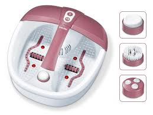
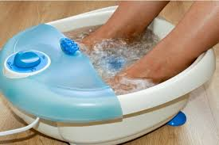

Foot spas are highly beneficial for foot muscles and ankle. It eases the tight muscles and provides flexibility to your ankle. It also reduces the pain and uneasiness caused due to wearing high heels for a long time. Regular foot spa sessions along with light exercises can notably improve your arthritic pain. Foot Spa helps relieve tired and sore feet with soothing vibrations. It is very easy to operate and comes with a splash guard and non-slip rubber feet.


7 BENEFITS OF FOOTSPA
Improves blood circulation:
Due to a sedentary lifestyle, many people don’t use their feet muscles properly, thus impeding good blood flow. Also, tight, pointed shoes especially high heels hinder circulation. Ten minutes of foot massage daily helps in transporting oxygen to the body’s cells, which is essential for overall health.
Helps in relaxation:
After a tiring and stressful day, a foot massage is a soothing and relaxing way to relax, particularly after a long day of standing and walking around, as the feet tend to swell up. Massage and reflexology of 5 to 10 minutes before going to bed can improve feelings of general well-being.
Promotes better sleep:
The best time to do foot massage is before going to bed. A soothing and relaxing foot massage improves the blood circulation. This helps in getting a peaceful sleep.
Relieves body pains:
This is the best part of reflexology. If done carefully, it treats pains and aches such as headaches, migraines, neck pain, lower and upper backaches.
mproves mood and fights depression:
Foot massage and reflexology helps in fighting depression. Certain points on the feet are helpful in alleviating depression symptoms. Massaging these points or applying pressure to them for a few minutes 2 or 3 times a day can help relieve symptoms of depression.
Makes feet healthier:
One easy way to help keep your feet healthy and free from foot problems is a regular foot massage. It helps stimulate the muscles around your feet, lessens stiffness and even reduces pain in the ankles or the heels. Plus, a short 5-minute foot massage daily will make your ankles strong and flexible, thus preventing unpleasant ankle and foot injuries.
Alleviates swelling (edema):
Regular foot massage during pregnancy can help reduce the effects of edema, which is swelling in the feet and ankles due to fluid retention. This is very common during pregnancy, especially in the last trimester.